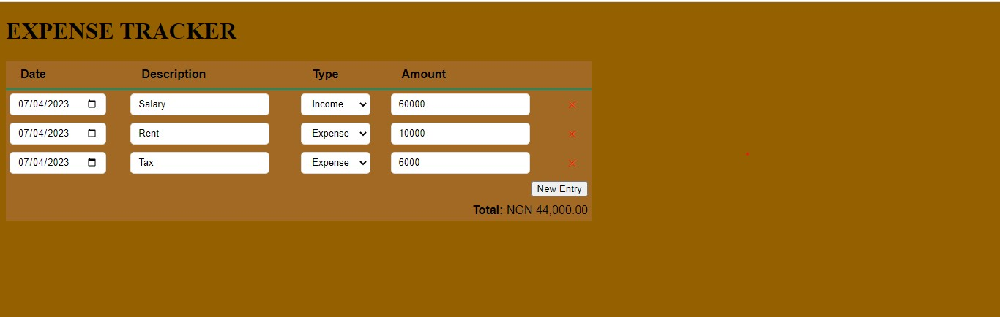

Key Features
Expense Tracking
Effortlessly track your expenses on the go. Categorize transactions and keep a record of your spending habits.
About Us
The inspiration for Expense Tracker came from personal struggles in managing finances effectively and I found it challenging to keep track of my expenses, set budgets, and gain insights into our spending habits. As an individual with diverse skills in software development and a passion for financial responsibility, I decided to embark on a journey to create a solution that would simplify personal finance management for everyone.
Throughout the timeline of this project, I experienced moments of excitement, frustration, and triumph. It has been a tremendous learning experience for each of me, pushing my boundaries and encouraging me to think innovatively.
This project is a Portfolio Project for ALX Software Engineering program, where I honed my technical skills. You can find the GitHub repository for the project below:
View on GitHub